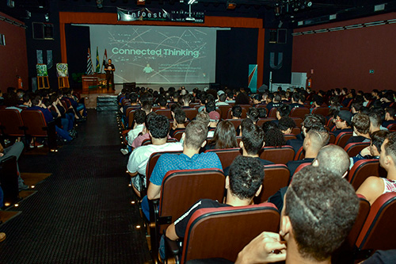
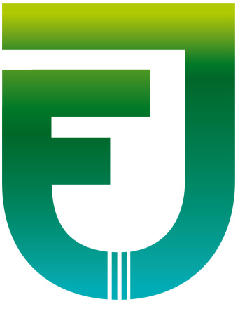
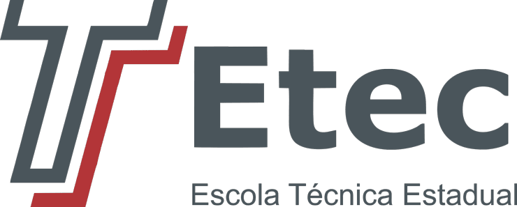

8ª FIPPETEC - Ciclo de Palestras e Cursos das ETECs
O 8º Ciclo de Minicursos e Palestras destinadas às Escolas Técnicas da cidade e região de Presidente Prudente (ETECs) é um evento ofertado pela FIPP/Unoeste exclusivamente para alunos dos cursos técnicos das ETECs do Centro Paula Souza. O evento integra a programação da Semana de Computação e Informática (INFOESTE) e tem como objetivo oferecer aos alunos das ETECs minicursos e palestras de temas atuais, auxiliando na formação técnica e despertar o interesse de ingressar em cursos de graduação na área da Computação e Informática.


